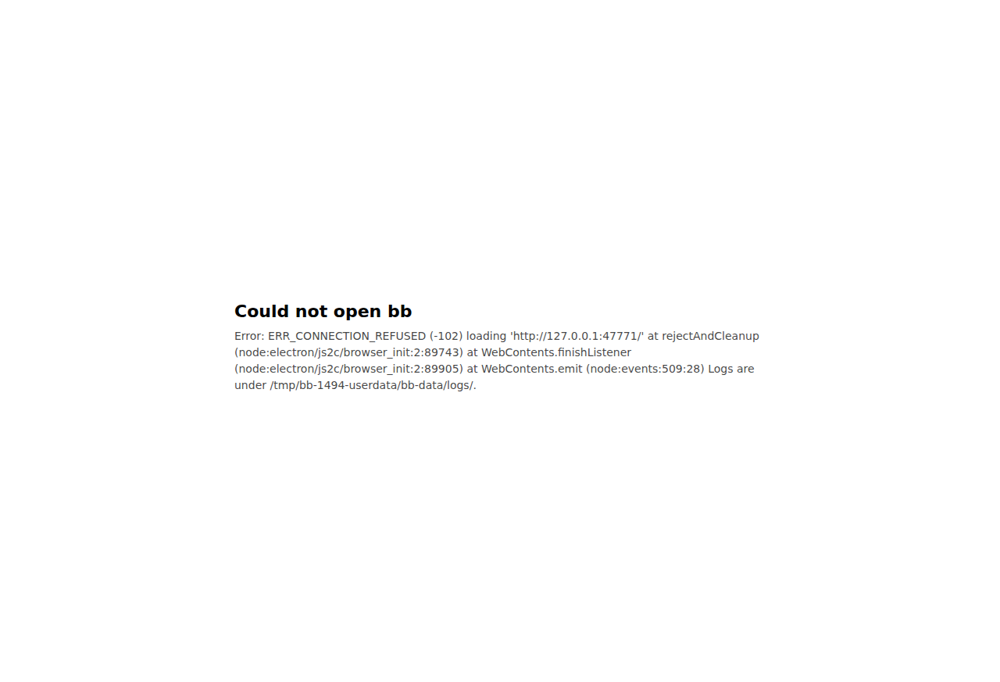
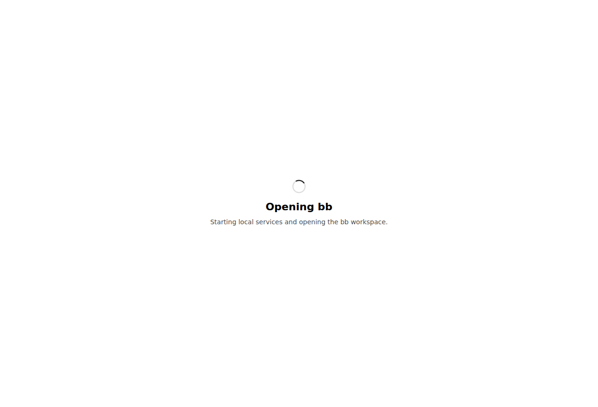

#1494 · Desktop: an unreachable saved remote server target leaves the app on a dead-end startup error
TL;DR
Plain-language framing. The desktop app remembers which bb server it should show (the server target, saved in server-target.json in the app's user-data folder). "This Mac" (builtin) starts a local server; a custom or connect target just loads a remote URL into the Electron window like a browser would. Electron's BrowserWindow.loadURL returns a promise that rejects when the page cannot be fetched (host down, port closed, DNS failure, timeout).
The reporter points the app at a server over Tailscale; when that host is unreachable at launch, the window shows "Could not open bb" followed by a raw Electron stack trace, and nothing to click. I reproduced this exactly against the built desktop shell at 16ceb3a54 on Linux under Xvfb with a custom target nothing listens on: the same "Could not open bb / Error: ERR_CONNECTION_REFUSED (-102) loading … at rejectAndCleanup (node:electron/js2c/browser_init…)" screen with zero interactive controls (screenshot below). The mechanism is exactly what the issue says: applyServerTarget() awaits loadWindowUrl for the custom/connect branches without any try/catch, the rejection unwinds through runDesktopApp() into the top-level .catch which renders error.stack into the static, script-less error view.
Two things I found beyond the issue: (1) the recovery route the issue names, Window ▸ Server, is worse when the target is still unreachable: re-selecting the same custom item (or any remote item) goes through void setActiveServerTarget(), which has no top-level catch at all, so the rejection becomes an UnhandledPromiseRejectionWarning on stderr and the window turns completely blank (Chromium's failed-navigation page), with bbAppLoaded left true. (2) When the host silently drops packets (a sleeping Tailscale peer is the realistic case) the loading screen sits for Chromium's ~2 min connect timeout with the copy "Starting local services…" before the same dead end appears (ERR_CONNECTION_TIMED_OUT), which is issue #1524's territory. Nothing on origin/main after the base commit touches this path, so it is still open.
Claims vs findings
| Claim | Status | Evidence |
|---|---|---|
Startup with an unreachable custom target shows "Could not open bb" + raw Electron stack, no controls | Verified | Live repro on the built shell (Xvfb, Electron 41.7.0): body text and screenshot 1494-startup-error-refused.png; CDP count of button,a,input,[role=button] on the page = 0. |
Reporter saw ERR_FAILED (-2) | Unverified (code differs, path identical) | I cannot bring a Tailscale peer down here. Closed port gives ERR_CONNECTION_REFUSED (-102), blackholed IP gives ERR_CONNECTION_TIMED_OUT (-118), port 1 gives ERR_UNSAFE_PORT (-312). All are the same rejection of loadURL handled by the same code path; only the message differs. |
applyServerTarget() is called at startup for a non-builtin target with no guard | Verified | main.ts#L2280-L2289: await applyServerTarget(); inside runDesktopApp(). |
The custom branch does bbAppLoaded = true; await loadWindowUrl(...) and nothing catches the rejection | Verified | main.ts#L1226-L1234. loadUrlIntoWindow only swallows ERR_ABORTED and rethrows everything else (desktop-window-factory.ts#L197-L209). |
Top-level handler renders error.stack | Verified | main.ts#L2292-L2301; the visible text in the repro is exactly error.stack + " Logs are under …/logs/." |
Error view is static HTML under default-src 'none', cannot carry a working button | Verified | local-view.ts#L54-L65 (no actions rendered) and #L81 (CSP). Unit repro test below asserts both. |
Same unguarded load on the connect branch after successful auth | Verified by code | main.ts#L1220-L1221. Not exercised live (no bb Connect account/server here). |
refreshApplicationMenu() never runs, "so the Server menu keeps showing the failed target as active" | Half right | The call at #L1235 is indeed skipped. But the menu's checked item comes from serverTargetStore.getTarget() (buildMenuServerItems), and the store still says custom, so the menu would show the failed target as active even if the refresh ran (and it did run once at #L2272 before the load). The skipped refresh is real but not the reason for the checkmark. |
bbAppLoaded is true while the error screen shows | Refuted for the startup path, verified for the menu path | At startup the top-level catch calls loadStartupError, which sets bbAppLoaded = false (#L1463-L1465). When the same failure happens from the Server menu nothing resets it, so it stays true while a blank page shows (see "menu path" below). |
Recovery is only via Window ▸ Server or hand-editing server-target.json | Verified, and the menu route is worse than described | Re-selecting an unreachable target from the menu produced a blank white window and an UnhandledPromiseRejectionWarning (log + screenshot). Switching to "This Mac" would work (that branch is guarded), but the screen does not say so. |
{kind=link}
{kind=link}
Environment
- bb
16ceb3a54(main, 2026-08-18), worktree/home/sawyer/projects/bb/.claude/worktrees/wf_242c3e11-a10-22, built withpnpm exec turbo run build(build.log). - Linux 7.0.0-29-generic (x64), node v24.18.0, Electron 41.7.0 (from
apps/desktopdevDependencies), Xvfb viaxvfb-run. The desktop shell was launched fromapps/desktop/distexactly asscripts/run-electron-dev.mjsdoes, but with its own--user-data-dir=/tmp/bb-1494-userdataandBB_DATA_DIR=/tmp/bb-1494-userdata/bb-dataso nothing under~/.bbis touched. - No bb server, host daemon or dev instance was needed: a
customtarget never starts the local runtime. Nothing listened on127.0.0.1:47771;10.255.255.1is a blackholed RFC1918 address on this host. - The reporter's platform is macOS (M1); the code path (
applyServerTarget→loadWindowUrl→BrowserWindow.loadURL) has no platform branch, and the rendered error text is byte-identical in shape to the issue's.
Minimal reproduction
Repro scripts live in 1494/repro/. They take the worktree root as an argument; nothing else is hardcoded. Precondition: pnpm install --frozen-lockfile --prefer-offline && pnpm exec turbo run build in the worktree, and xvfb-run on PATH (on macOS just run electron directly, without xvfb-run).
A. Startup with an unreachable custom target (the issue)
- Launch the shell with a saved custom target pointing at a closed port. The script writes
server-target.json(what it looks like) into a fresh user-data dir and starts Electron with a CDP port so we can read the page:$ /tmp/bb-reports/issues/1494/repro/run-desktop-unreachable.sh \ /home/sawyer/projects/bb/.claude/worktrees/wf_242c3e11-a10-22 \ /tmp/bb-1494-userdata http://127.0.0.1:47771 9333 \ /tmp/bb-reports/issues/1494/electron-run2-refused.log & - After ~5 s, read what the window shows and screenshot it:
$ node /tmp/bb-reports/issues/1494/repro/cdp-screenshot.mjs 9333 assets/1494-startup-error-refused.png URL: data:text/html;charset=utf-8,%3C!doctype%20html%3E%0A%3Chtml... BODY TEXT: Could not open bb Error: ERR_CONNECTION_REFUSED (-102) loading 'http://127.0.0.1:47771/' at rejectAndCleanup (node:electron/js2c/browser_init:2:89743) at WebContents.finishListener (node:electron/js2c/browser_init:2:89905) at WebContents.emit (node:events:509:28) Logs are under /tmp/bb-1494-userdata/bb-data/logs/. interactive controls on page: 0 wrote assets/1494-startup-error-refused.png
- Electron's stderr (electron-run2-refused.log) shows the rejection reaching the top-level handler, which writes it to stderr before rendering it:
(node:2469768) electron: Failed to load URL: http://127.0.0.1:47771/ with error: ERR_CONNECTION_REFUSED Error: ERR_CONNECTION_REFUSED (-102) loading 'http://127.0.0.1:47771/' at rejectAndCleanup (node:electron/js2c/browser_init:2:89743) at WebContents.finishListener (node:electron/js2c/browser_init:2:89905) at WebContents.emit (node:events:509:28)
Expected (issue): a screen that names the unreachable server and offers Retry and Use This Mac, like the builtin failure does. Actual: the screen above.


B. The "recovery" route from the issue: Window ▸ Server → same target again
The only escape the issue found is the Server menu. Selecting a remote item there runs the same code (setActiveServerTarget → applyServerTarget) but from a fire-and-forget void call with no catch. To click the native menu deterministically I launched with --inspect=9334 and evaluated Menu.getApplicationMenu()…item.click() in the main process (main-click-server-menu.mjs); it is the same handler a mouse click runs.
$ BB_1494_INSPECT=9334 /tmp/bb-reports/issues/1494/repro/run-desktop-unreachable.sh <worktree> /tmp/bb-1494-userdata http://127.0.0.1:47771 9333 electron-run3-menu-reselect.log &
$ node /tmp/bb-reports/issues/1494/repro/main-click-server-menu.mjs 9334 "127.0.0.1:47771"
{ "type": "string", "value": "clicked Window > Server > 127.0.0.1:47771" }
$ node /tmp/bb-reports/issues/1494/repro/cdp-screenshot.mjs 9333 assets/1494-menu-reselect-blank.png
URL: http://127.0.0.1:47771/...
BODY TEXT:
interactive controls on page: 0
Electron stderr (electron-run3-menu-reselect.log):
(node:2496378) electron: Failed to load URL: http://127.0.0.1:47771/ with error: ERR_CONNECTION_REFUSED
(node:2496378) UnhandledPromiseRejectionWarning: Error: ERR_CONNECTION_REFUSED (-102) loading 'http://127.0.0.1:47771/'
at rejectAndCleanup (node:electron/js2c/browser_init:2:89743)
…
(node:2496378) UnhandledPromiseRejectionWarning: Unhandled promise rejection. …
http://127.0.0.1:47771/), the error message is gone, and bbAppLoaded is left true. Nothing on screen tells the user what happened.C. Blackholed host (closest to a sleeping Tailscale peer)
$ /tmp/bb-reports/issues/1494/repro/run-desktop-unreachable.sh <worktree> /tmp/bb-1494-userdata http://10.255.255.1:38886 9333 electron-run4-blackhole.log &
# 07:44:10 launch … loading view (screenshot above) … 07:46:27:
(node:2516483) electron: Failed to load URL: http://10.255.255.1:38886/ with error: ERR_CONNECTION_TIMED_OUT
Error: ERR_CONNECTION_TIMED_OUT (-118) loading 'http://10.255.255.1:38886/'
at rejectAndCleanup (node:electron/js2c/browser_init:2:89743) …
$ node cdp-screenshot.mjs 9333 assets/1494-blackhole-timeout.png
BODY TEXT:
Could not open bb
Error: ERR_CONNECTION_TIMED_OUT (-118) loading 'http://10.255.255.1:38886/' at rejectAndCleanup … Logs are under /tmp/bb-1494-userdata/bb-data/logs/.
interactive controls on page: 0
Same dead end after 2m17s of an unexplained spinner (screenshot, log).
{kind=link}
Unit-level repro (what the error view can and cannot show)
main.ts runs on import, so applyServerTarget itself is not unit-testable without a refactor. The testable half is the view: repro-1494-startup-error-view.test.ts (also at apps/desktop/test/ in the worktree) feeds createLocalViewUrl exactly what the top-level catch feeds it and asserts the current behaviour (passes) and the expected behaviour (fails on main). Run from apps/desktop: pnpm exec vitest run test/repro-1494-startup-error-view.test.ts (output):
❯ test/repro-1494-startup-error-view.test.ts (4 tests | 2 failed)
× EXPECTED (fails on main): offers a Retry / Use This Mac control
AssertionError: expected '<!doctype html>…' to match /<button|<a /u
× EXPECTED (fails on main): names the server instead of the stack
AssertionError: expected … not to contain 'rejectAndCleanup'
Test Files 1 failed (1) Tests 2 failed | 2 passed (4)
// Repro for get-bb/bb#1494 (unit half).
//
// The desktop startup error screen is a static `data:` URL rendered by
// `createLocalViewUrl`. This test shows what the live repro shows visually:
// the view that `runDesktopApp().catch(...)` (apps/desktop/src/main.ts) falls
// back to when a saved remote target is unreachable carries the raw Electron
// stack as its body, offers no control the user could click, and locks itself
// down with `default-src 'none'` so it cannot ever run a Retry / Use This Mac
// handler. Together with the unguarded `loadWindowUrl` in `applyServerTarget`
// this is the "dead end" from the issue.
//
// The assertions marked EXPECTED (desired behaviour) FAIL on main; the ones
// marked CURRENT document what the code does today and pass.
import { describe, expect, it } from "vitest";
import { createLocalViewUrl } from "../src/local-view.js";
// Exactly what runDesktopApp's top-level catch does with the loadURL rejection
// (main.ts: `details: message` where message = error.stack).
const electronRejection = new Error(
"ERR_CONNECTION_REFUSED (-102) loading 'http://127.0.0.1:47771/'",
);
electronRejection.stack =
"Error: ERR_CONNECTION_REFUSED (-102) loading 'http://127.0.0.1:47771/'\n" +
" at rejectAndCleanup (node:electron/js2c/browser_init:2:89743)\n" +
" at WebContents.finishListener (node:electron/js2c/browser_init:2:89905)\n" +
" at WebContents.emit (node:events:509:28)";
function decodeDataUrl(url: string): string {
const prefix = "data:text/html;charset=utf-8,";
expect(url.startsWith(prefix)).toBe(true);
return decodeURIComponent(url.slice(prefix.length));
}
describe("#1494 startup error view for an unreachable saved server target", () => {
const html = decodeDataUrl(
createLocalViewUrl({
viewModel: {
details: `${electronRejection.stack} Logs are under /tmp/x/logs/.`,
kind: "error",
logText: "",
title: "Could not open bb",
},
}),
);
it("CURRENT: renders Electron internals as the user-facing message", () => {
expect(html).toContain("node:electron/js2c/browser_init");
expect(html).toContain("rejectAndCleanup");
});
it("CURRENT: forbids scripts, so no button could ever work here", () => {
expect(html).toContain(
`<meta http-equiv="Content-Security-Policy" content="default-src 'none'; style-src 'unsafe-inline'">`,
);
expect(html).not.toMatch(/<script/u);
});
it("EXPECTED (fails on main): offers a Retry / Use This Mac control", () => {
expect(html).toMatch(/<button|<a /u);
expect(html).toMatch(/Retry|This Mac|Window .* Server/u);
});
it("EXPECTED (fails on main): names the server instead of the stack", () => {
expect(html).toContain("127.0.0.1:47771");
expect(html).not.toContain("rejectAndCleanup");
});
});
Root cause
1. The remote branches of applyServerTarget() treat a page load as infallible. The builtin branch checks its outcome and renders a named error (main.ts#L1166-L1180); the connect branch checks authentication (#L1197-L1215) but then, like the custom branch, does this (#L1220-L1235):
bbAppLoaded = true;
await loadWindowUrl({ url: target.server.url }); // connect
…
} else {
// A custom server is a plain web load with no bb Connect involved.
bbAppLoaded = true;
await loadWindowUrl({ url: target.url }); // custom
if (!isCurrent()) {
return;
}
startRemoteSystemConfigSync(target.url);
}
refreshApplicationMenu();
loadWindowUrl → desktopWindowFactory.loadUrl → loadUrlIntoWindow, which awaits BrowserWindow.loadURL and rethrows anything that is not ERR_ABORTED (desktop-window-factory.ts#L197-L209). Electron rejects that promise for every network-level failure (ERR_CONNECTION_REFUSED, ERR_CONNECTION_TIMED_OUT, ERR_NAME_NOT_RESOLVED, ERR_FAILED, …). Nothing between there and the caller handles it, and startRemoteSystemConfigSync and refreshApplicationMenu are skipped.
2. Where the rejection lands decides what the user sees.
- At startup,
runDesktopApp()awaitsapplyServerTarget()(#L2280-L2289) and the module-level.catchrenderserror.stackas the "details" of a generic "Could not open bb" (#L2292-L2301). That handler exists for genuinely unexpected crashes; a remote host being down is an expected outcome that should never reach it. - From the Server menu,
selectServerdoesvoid setActiveServerTarget(serverId)(#L751-L753) andopenSetServerUrlDialogis likewisevoided; the rejection is unhandled, Chromium leaves its failed-navigation (blank) page in the window, andbbAppLoadedstaystrue. Repro B shows this.
3. The error view is terminal by construction. renderErrorView emits title, details and optional log text only (local-view.ts#L54-L65) inside a document whose CSP is default-src 'none'; style-src 'unsafe-inline' (#L81) and which is loaded as a data: URL, so it has neither script nor preload; a "Retry" button would need an IPC path that does not exist. The only in-app way out is the native menu, which the copy never mentions.
Why the symptom follows. Unreachable target → loadURL rejects → nobody in applyServerTarget catches → at startup the crash handler prints the stack into a button-less page (issue's screen); from the menu nothing prints anything (blank page). Both leave the saved target as-is, so the next launch repeats it, hence "reproduces on launch, every time".
Deeper issue. There is no notion of "target reachable?" for remote targets at all: probeBbServer/waitForCompatibleServer (apps/desktop/src/server-probe.ts) are used only for the local runtime. Also loadUrlIntoWindow has no deadline, so a half-open target keeps the loading screen up until Chromium's own connect timeout (~2 min here); that is #1524, closed as not planned but still present.
Proposed fix (first principles)
- Make the remote load a handled outcome. In
applyServerTarget()wrap the two remoteloadWindowUrlcalls intry/catch(or a smallloadRemoteServerPage()helper). On rejection: log the Electron detail once, thenawait loadStartupError({ title: "Could not reach <host>", details: "The bb server at <origin> did not answer. Check that the machine is awake and reachable, then use Window ▸ Server to retry or switch to This Mac.", logs: "" }), stop the Connect session renewal on the connect branch, and callrefreshApplicationMenu(). SetbbAppLoaded = trueonly after the load resolves andisCurrent()still holds. Print the URL without credentials/query (a custom URL may carry a token). This alone removes the stack trace, fixes the blank-window menu path, and keeps the startup crash handler for real crashes. - Give the error view real actions. The
data:view cannot host handlers under its CSP. Either (a) render the local views through abb-local://(orfile:) scheme with the existing app preload and a narrow, sender-checked IPC ("retry", "use-builtin") that the main process only honours while the current window URL is that local view (a remote page must not be able to trigger it), or (b) at minimum put "Window ▸ Server ▸ This Mac" in the copy. #1519 implemented (a) with a per-render one-use token and sender check; SlopCop's review there is a good checklist (do not trust remote content, redact URLs). - Optionally probe first / add a deadline. A short
fetch(origin + "/api/v1/system/health"…)style probe with a timeout beforeloadWindowUrlwould turn the 2-minute spinner into a fast, named error and would also cover the half-open case from #1524. Keep it in the desktop (host-local UX policy); it does not cross the server/daemon boundary and no protocol version bump is needed. - Fix the loading copy ("Starting local services…") for remote targets, and add tests: a unit test for the helper (rejection → error view called with the redacted label;
ERR_ABORTED/generation-superseded → no error view) and the view test above turned positive.
Risks: item 2(a) touches how every local view is served; a token/sender check must be in place before any renderer can ask the main process to switch targets. Item 1 must not catch ERR_ABORTED-style superseded loads as failures (the generation check already handles overlap; keep it after the await).
PR review
No open PR is linked. #1519 ("Recover from an unreachable saved server target", branch sweep/issue-1494-desktop-unreachable-server, +768/−16, diff saved at 1494/pr1519.diff) implemented items 1 and 2(a) above (new remote-server-load.ts, startup-error-ipc.ts, actions in local-view.ts, preload wiring, tests) and was closed unmerged on 2026-08-13 as part of the sweep cleanup, not for a technical reason; SlopCop's remaining finding at close was URL redaction (addressed by describeServerUrl). It is a reasonable base to reopen or cherry-pick; I did not check it out or run its tests since it is closed.
Related issues
- #1524 (closed, not planned) — a target that accepts TCP but never answers leaves startup with no deadline; the same load call, the never-resolves side. Repro C here shows the ~2 min wait for the packet-drop variant.
- #1753 (open) — Server menu shows no Connect servers and no reason; the same menu is the only recovery surface for this bug.
- #990 — introduced "skip the local server when the desktop targets a remote server", i.e. the code path where the remote load is the first and only thing that happens at startup.
- #1519 — closed fix attempt (see PR review).
Appendix
Commands run
gh issue view 1494 --comments pnpm install --frozen-lockfile --prefer-offline pnpm exec turbo run build > /tmp/bb-reports/issues/1494/build.log 2>&1 git fetch origin main; git log 16ceb3a54..origin/main --oneline -- apps/desktop/ # (empty: nothing newer touches the desktop) # run 1 (port 1 → ERR_UNSAFE_PORT, same screen): electron-run1.log # run 2 (closed port → ERR_CONNECTION_REFUSED): /tmp/bb-reports/issues/1494/repro/run-desktop-unreachable.sh <worktree> /tmp/bb-1494-userdata http://127.0.0.1:47771 9333 /tmp/bb-reports/issues/1494/electron-run2-refused.log node /tmp/bb-reports/issues/1494/repro/cdp-screenshot.mjs 9333 /tmp/bb-reports/issues/assets/1494-startup-error-refused.png # run 3 (menu re-select via main-process inspector): BB_1494_INSPECT=9334 /tmp/bb-reports/issues/1494/repro/run-desktop-unreachable.sh <worktree> /tmp/bb-1494-userdata http://127.0.0.1:47771 9333 /tmp/bb-reports/issues/1494/electron-run3-menu-reselect.log node /tmp/bb-reports/issues/1494/repro/main-click-server-menu.mjs 9334 "127.0.0.1:47771" node /tmp/bb-reports/issues/1494/repro/cdp-screenshot.mjs 9333 /tmp/bb-reports/issues/assets/1494-menu-reselect-blank.png # run 4 (blackholed IP → ERR_CONNECTION_TIMED_OUT after 2m17s): /tmp/bb-reports/issues/1494/repro/run-desktop-unreachable.sh <worktree> /tmp/bb-1494-userdata http://10.255.255.1:38886 9333 /tmp/bb-reports/issues/1494/electron-run4-blackhole.log node /tmp/bb-reports/issues/1494/repro/cdp-screenshot.mjs 9333 /tmp/bb-reports/issues/assets/1494-loading-before.png # at +12 s node /tmp/bb-reports/issues/1494/repro/cdp-screenshot.mjs 9333 /tmp/bb-reports/issues/assets/1494-blackhole-timeout.png # after failure # unit repro (from apps/desktop): pnpm exec vitest run test/repro-1494-startup-error-view.test.ts > /tmp/bb-reports/issues/1494/repro-test-main.log gh pr view 1519 …; gh pr diff 1519 > /tmp/bb-reports/issues/1494/pr1519.diff pkill -f user-data-dir=/tmp/bb-1494-userdata; pnpm dev:stop
Launcher script (run-desktop-unreachable.sh)
#!/usr/bin/env bash
# Repro for get-bb/bb#1494: launch the built desktop shell (apps/desktop/dist)
# under Xvfb with a saved `custom` server target that nothing listens on.
# Usage: run-desktop-unreachable.sh <worktree-root> <userdata-dir> <url> <cdp-port> <log>
set -u
ROOT="$1"; UD="$2"; URL="$3"; PORT="$4"; LOG="$5"
mkdir -p "$UD"
printf '{"connectServer":null,"customServerUrl":"%s","target":"custom"}\n' "$URL" > "$UD/server-target.json"
cd "$ROOT/apps/desktop"
export BB_DESKTOP_VERSION_CHECK=0 BB_DESKTOP_AUTO_UPDATE=0 BB_DATA_DIR="$UD/bb-data"
exec xvfb-run -a -s "-screen 0 1400x900x24" ./node_modules/.bin/electron \
--no-sandbox --user-data-dir="$UD" --remote-debugging-port="$PORT" ${BB_1494_INSPECT:+--inspect=$BB_1494_INSPECT} . > "$LOG" 2>&1
Main-process menu click helper (main-click-server-menu.mjs)
// Drive the Electron MAIN process over the Node inspector protocol
// (electron --inspect=<port>) and click an item in the Window ▸ Server menu,
// exactly what a user does with the mouse. Usage:
// node main-click-server-menu.mjs <inspect-port> <server-item-id>
// <server-item-id> is the menu LABEL, e.g. "This Mac" or "127.0.0.1:47771".
const [port, itemId] = process.argv.slice(2);
const targets = await (await fetch(`http://127.0.0.1:${port}/json`)).json();
const ws = new WebSocket(targets[0].webSocketDebuggerUrl);
await new Promise((r) => (ws.onopen = r));
let id = 0;
const pending = new Map();
ws.onmessage = (ev) => {
const msg = JSON.parse(ev.data);
if (msg.id && pending.has(msg.id)) {
pending.get(msg.id)(msg);
pending.delete(msg.id);
}
};
const send = (method, params = {}) =>
new Promise((resolve) => {
const i = ++id;
pending.set(i, resolve);
ws.send(JSON.stringify({ id: i, method, params }));
});
const expression = `(() => {
const { Menu } = process.mainModule.require("electron");
const menu = Menu.getApplicationMenu();
const walk = (items, path) => {
for (const item of items) {
const here = [...path, item.label || item.role || item.type];
if (item.label === ${JSON.stringify(itemId)}) {
item.click();
return "clicked " + here.join(" > ");
}
if (item.submenu) {
const r = walk(item.submenu.items, here);
if (r) return r;
}
}
return null;
};
return walk(menu.items, []) || "item not found";
})()`;
const res = await send("Runtime.evaluate", { expression, returnByValue: true });
process.stdout.write(JSON.stringify(res.result?.result ?? res, null, 2) + "\n");
ws.close();
Raw logs
- electron-run1.log — port 1:
ERR_UNSAFE_PORT (-312), same screen. - electron-run2-refused.log — repro A.
- electron-run3-menu-reselect.log — repro B, includes the
UnhandledPromiseRejectionWarning. - electron-run4-blackhole.log — repro C.
- repro-test-main.log — vitest output on main.
- build.log, pr1519.diff.
Things checked and ruled out
git log 16ceb3a54..origin/main -- apps/desktop/is empty: no later commit changes this path (not ALREADY FIXED).- The issue's line numbers reference a commit
0a985e6that is not in this clone (fork?), so I re-anchored every reference to16ceb3a54; the code is unchanged in substance. - The startup path resets
bbAppLoadedtofalsevialoadStartupError; the issue's "state says loaded while error shows" holds only for the menu path.